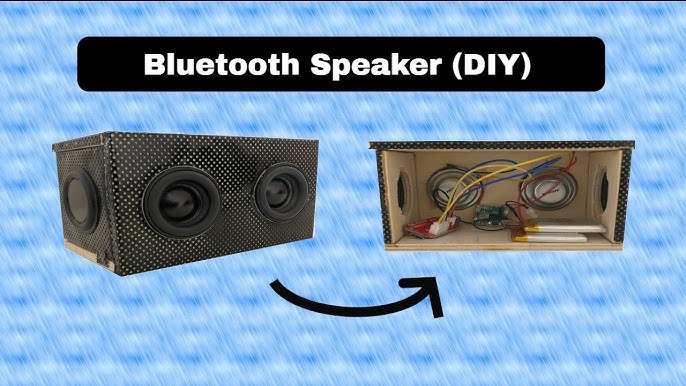

Mini Bluetooth Speaker

₹400
Tools & Materials Required:
- Bluetooth Audio Module (e.g., CSR8635 or BC127)
- Speaker Drivers (typically 3W to 5W)
- Battery (Lithium-Ion rechargeable, 3.7V)
- Charging Module (e.g., TP4056 for charging the battery)
- Amplifier Module (e.g., TDA2822 or LM386)
- Power Switch
- Enclosure (can be a small box, plastic, or wood)
- Wires for connection
- Soldering Iron and Solder
- Hot Glue Gun or Double-Sided Tape
- Micro-USB Cable (for charging)
- Perfboard (optional, if you want to include a wired option)
- Resistors and Capacitors (if needed, depending on your circuit)
- Plastic or Wood for Enclosure (can use a project box, old speaker box, or custom-designed case)
- Drill (for making holes for the speaker, buttons, etc.)
Step 1: Prepare the Speaker Enclosure
- Choose your enclosure: You can use a small plastic or wooden box as the speaker's case. The size of the box should be big enough to fit the speaker, battery, and other components.
- Drill holes: Drill a hole for the speaker driver (front) and for the buttons/charging port (back or side).
- Mark spaces: Mark appropriate spaces for the Bluetooth module, battery, amplifier, and charging circuit inside the enclosure.
Step 2: Wiring the Components
A. Connect the Bluetooth Module:
- Power Supply Connection: Connect the 5V output of the battery charging module to the VCC input on the Bluetooth module.
- Ground Connection: Connect the GND on the Bluetooth module to the battery charging module's GND.
- Audio Output: The Bluetooth module will output audio signals, usually through left (L) and right (R) channels, which need to be connected to the amplifier module.
B. Connect the Amplifier Module:
- Input from Bluetooth Module: Connect the L and R audio output from the Bluetooth module to the input pins of the amplifier module.
- Speaker Output: Connect the output pins from the amplifier module to the speaker driver.
- Power Supply for Amplifier: Connect the 5V and GND from the battery module to the amplifier module to power it.
C. Battery & Charging Module:
- Connect the charging module to the battery: Connect the output pins from the charging module to the positive and negative terminals of the battery.
- Make sure the input pins of the charging module are connected to the Micro-USB port for charging.
Step 3: Set Up the Control Buttons
- Power Switch: Install a simple ON/OFF switch to control power to the Bluetooth module and the amplifier. You can place this on the side of the enclosure.
- Volume Control: For volume control, you could add a rotary potentiometer or simple push buttons connected to the amplifier's gain circuit.
- Bluetooth Pairing Button: If needed, you can add a button for Bluetooth pairing, though many Bluetooth modules pair automatically when powered on.
Step 4: Secure the Components Inside the Enclosure
- Position the Speaker Driver: Secure the speaker driver to the front hole you drilled. Use hot glue or double-sided tape for a secure attachment.
- Mount the Bluetooth Module: Place the Bluetooth module, amplifier, and charging circuit inside the enclosure and secure them using glue or mounting tape.
- Wire Management: Organize the wires neatly to prevent them from interfering with the moving parts or causing shorts. Use zip ties or clips to keep wires in place.
Step 5: Testing and Final Assembly
- Check Connections: Double-check that all connections are correct. Make sure power is properly supplied to each module and that the audio output of the Bluetooth module is correctly wired to the amplifier.
- Test Assembly: Power on the device, and pair it with your phone or Bluetooth-enabled device. Play some music to test the audio output.
- Adjustment: Adjust the volume and check for any distortion or issues with audio quality.
- Test Charging: Plug in the charging cable and test the charging function to make sure everything works as expected.
Step 6: Secure the Enclosure and Finish the Project
- Close the Enclosure: Once everything is working fine, close the enclosure and secure the top part with screws or glue.
- Test Charging: Plug in the charging cable and test the charging function to make sure everything works as expected.
Step 7: Enjoy Your Mini Bluetooth Speaker!
Now you have your own portable Bluetooth speaker! You can customize it further with added features like:
- LED Lights for visual effects
- Extra Bass by adjusting the amplifier settings
- Waterproofing for outdoor use
Caution:
Handle all electronic components carefully to avoid short circuits or static damage. Make sure all connections are secure before powering on, and use proper insulation to prevent any accidental contact with wires. Always test the speaker in a safe environment before final assembly to ensure functionality.